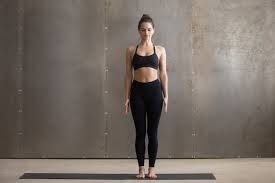

Squat Exercise
Instructions:
Exercise will start with calibration phase.
1. Make sure that camera see only you posture, there should be nobody else on camera range.
2. Make sure that you are standing facing forward and far enough so your feet are captured on camera.
3. The calibration will required to stand in squat pose like in below picture for 5sec.
4. The second stage of calibration will required to stand in standing pose like in below picture for 5sec
-
squat pose

-
standing pose
